1.7 Solutions to Exercises
1.7.1 Solutions 1: Beaver temperature
- Load the
beav2data from the libraryMASS. - Examine the data frame using
summary,head,tail. Query the help with?beav2for a description of the dataset - Transform the temperature data into a time series object and plot the latter.
- Fit a linear model using
lmand the variableactivas factor, viz.lin_mod <- lm(temp~as.factor(activ), data=beav2). Overlay the means on your plot withlines(fitted(lin_mod))replacinglin_modwith yourlmresult. - Inspect the residuals (
resid(lin_mod)) and determine whether there is any evidence of trend or seasonality. - Look at a quantile-quantile (Q-Q) plot to assess normality. You can use the command
qqnormif you don’t want to transform manually the residuals withqqlineor useplot(lin_mod, which=2). - Plot the lag-one residuals at time \(t\) and \(t-1\). Is the dependence approximately linear?
data(beav2, package = "MASS")
`?`(MASS::beav2)
beav2$hours <- with(beav2, 24 * (day - 307) + trunc(time/100) + (time%%100)/60)
summary(beav2) day time temp activ
Min. :307.0 Min. : 0 Min. :36.58 Min. :0.00
1st Qu.:307.0 1st Qu.:1128 1st Qu.:37.15 1st Qu.:0.00
Median :307.0 Median :1535 Median :37.73 Median :1.00
Mean :307.1 Mean :1446 Mean :37.60 Mean :0.62
3rd Qu.:307.0 3rd Qu.:1942 3rd Qu.:37.98 3rd Qu.:1.00
Max. :308.0 Max. :2350 Max. :38.35 Max. :1.00
hours
Min. : 9.50
1st Qu.:13.62
Median :17.75
Mean :17.75
3rd Qu.:21.88
Max. :26.00 head(beav2) day time temp activ hours
1 307 930 36.58 0 9.500000
2 307 940 36.73 0 9.666667
3 307 950 36.93 0 9.833333
4 307 1000 37.15 0 10.000000
5 307 1010 37.23 0 10.166667
6 307 1020 37.24 0 10.333333tail(beav2) day time temp activ hours
95 308 110 37.76 1 25.16667
96 308 120 37.73 1 25.33333
97 308 130 37.77 1 25.50000
98 308 140 38.01 1 25.66667
99 308 150 38.04 1 25.83333
100 308 200 38.07 1 26.00000# Fancy time series object
hours <- seq(ISOdatetime(1990, 11, 3, 9, 30, 0), ISOdatetime(1990, 11, 4, 2,
0, 0), by = (60 * 10))
plot(xts::xts(beav2[, "temp"], hours), main = "Body temperature of beaver",
ylab = "Temperature (in degree Celcius)")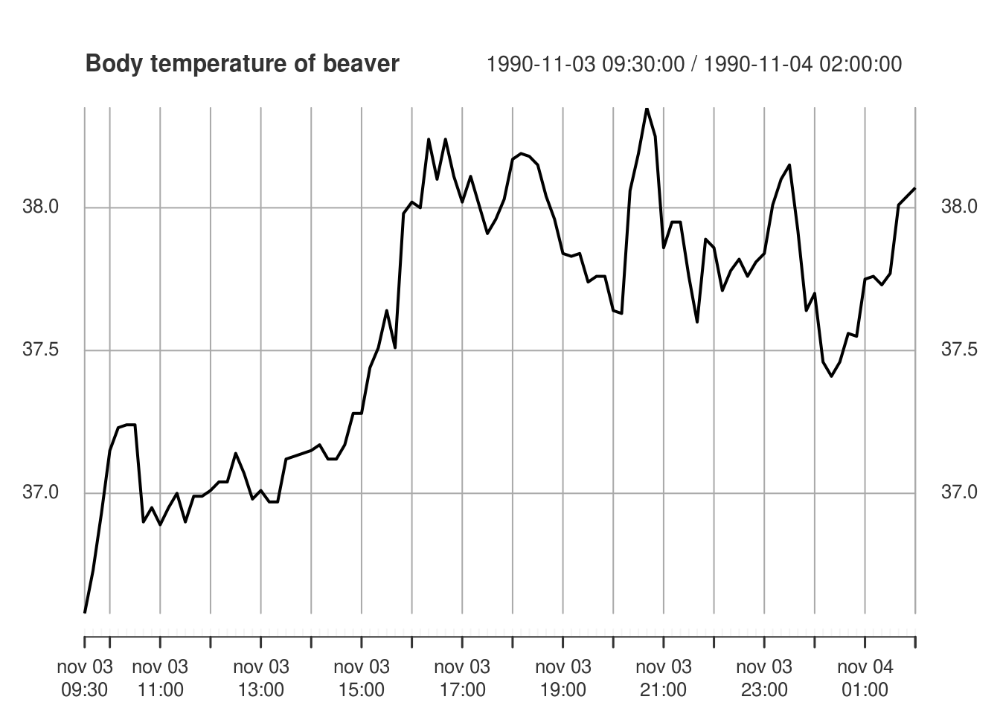
# Vanilla ts - works ok for regular time series
temp <- ts(beav2[, "temp"], start = 9.5, frequency = 6)
plot(temp, main = "Body temperature of beaver", ylab = "Temperature (in degree Celcius)")
lin_mod <- lm(temp ~ as.factor(activ), data = beav2)
lines(beav2[, "hours"], fitted(lin_mod), col = "blue")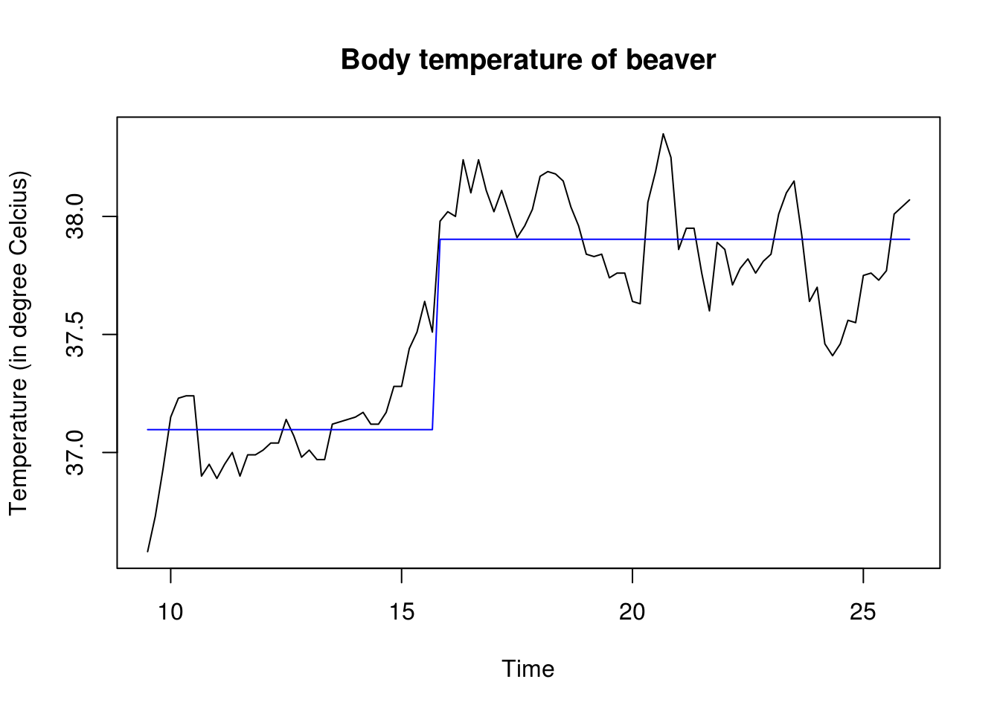
# Some trend remaining in the first part, before timeplot(residuals(lin_mod), ylab = "Residuals", main = "Residuals of linear model with simple change-point")
abline(h = 0)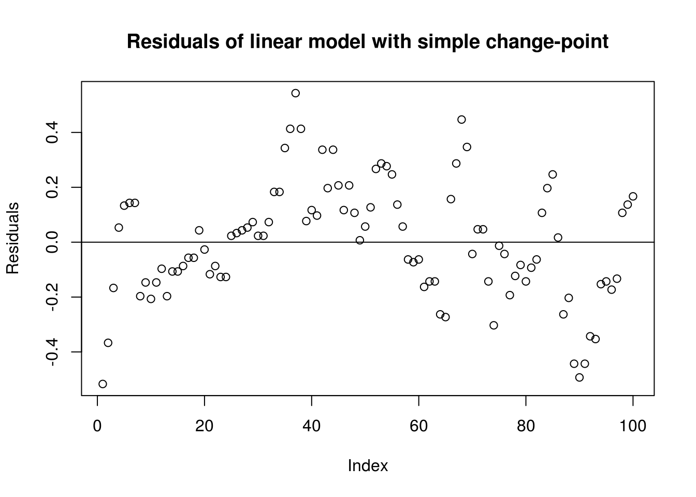
# Q-Q plot (1) with output from lm
plot(lin_mod, which = 2)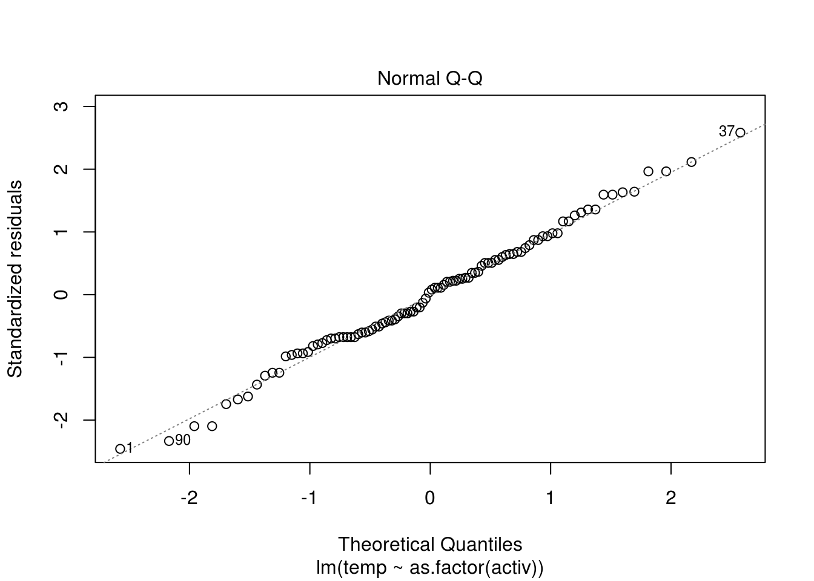
# (2) with qqnorm and tentative line with quartiles
qqnorm(residuals(lin_mod))
qqline(residuals(lin_mod))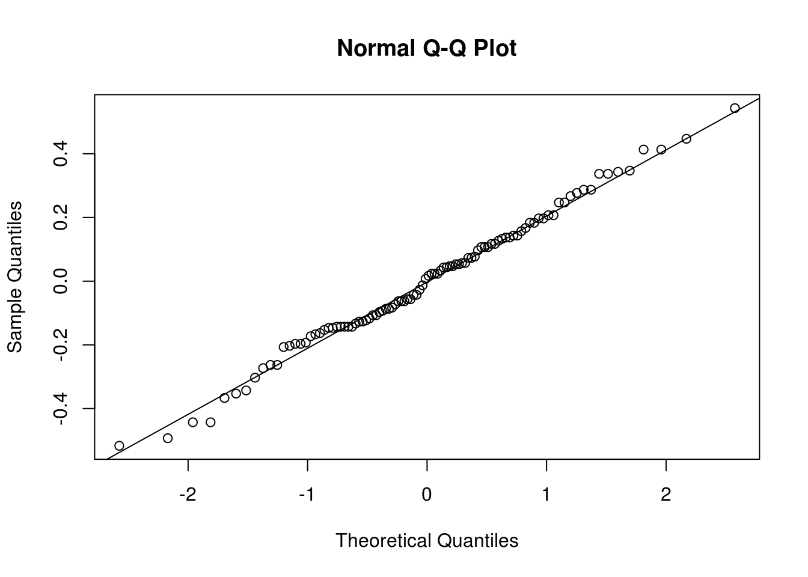
# (3) standardized manually
res <- residuals(lin_mod)
plot(qnorm(rank(res)/(length(res) + 1)), res/sd(res), pty = "s", bty = "l",
xlab = "Theoretical Quantiles", ylab = "Sample Quantiles", main = "Normal Q-Q plot",
pch = 20, col = rgb(0, 0, 0, 0.5))
abline(a = 0, b = 1)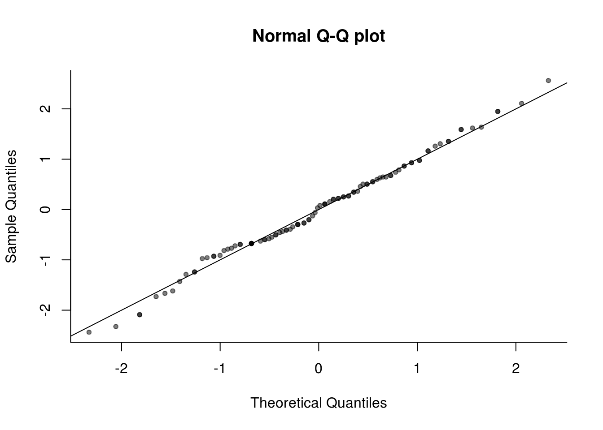
plot(res[-length(res)], res[-1], xlab = expression(Y[t - 1]), ylab = expression(Y[t]),
main = "Lagged residuals")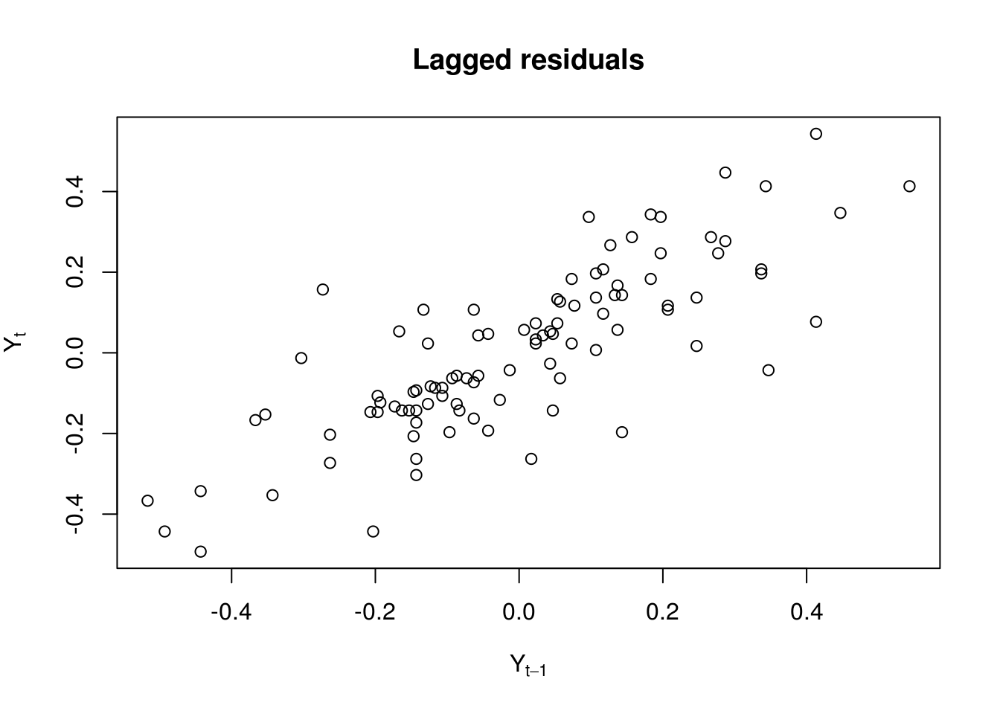
1.7.2 Solutions 2: SP500 daily returns
- Download the dataset using the following command
- Obtain the daily percent return series and plot the latter against time.
- With the help of graphs, discuss evidences of seasonality and nonstationarity. Are there seasons of returns?
- Plot the (partial) correlogram of both the raw and the return series. Try the acf with
na.action=na.passand without (by e.g. converting the series to a vector usingas.vector. Comment on the impact of ignoring time stamps. - Plot the (partial) correlogram of the absolute value of the return series and of the squared return series. What do you see?
sp500 <- tseries::get.hist.quote(instrument = "^GSPC", start = "2000-01-01",
end = "2016-12-31", quote = "AdjClose", provider = "yahoo", origin = "1970-01-01",
compression = "d", retclass = "zoo")time series starts 2000-01-03
time series ends 2016-12-30library(xts)
library(lubridate)
# Daily return in percentage
spret <- 100 * diff(log(sp500))
plot(spret, ylab = "Daily returns (%)", main = "Percentage daily returns of the SP-500")
# local trend to see if there is any evidence of non-zero trend
lines(index(spret), lowess(spret, f = 1/5)$y, col = 2, lwd = 2)
# Volatility as function of month
plot(jitter(month(spret), amount = 1/3), spret, pch = 20, ylab = "Daily percent returns",
xlab = "Month", bty = "l")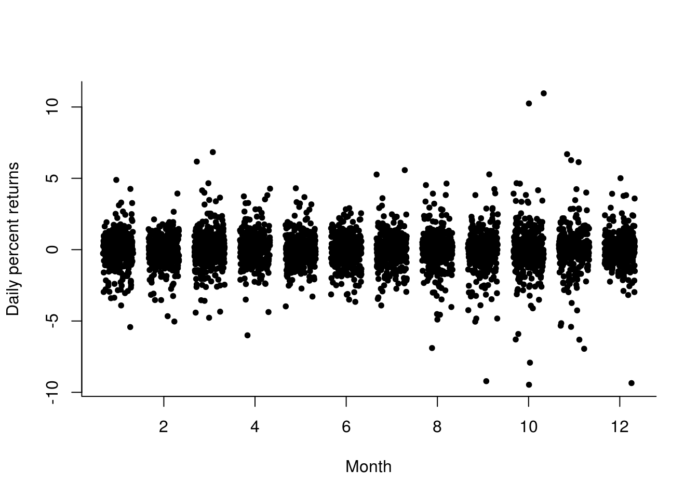
boxplot(as.vector(spret) ~ factor(wday(spret), labels = c("Mon", "Tue", "Wed",
"Thu", "Fri")), xlab = "Day of the week", pch = 20, col = rgb(0, 0, 0, 0.4),
ylab = "Daily percent returns", bty = "l")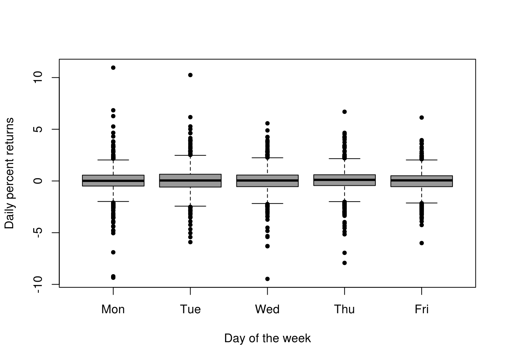
# More uncertainty in March-May and August-November Some more extremes early
# in the week
par(mfrow = c(1, 2))
title_sp <- "Daily return of \nadjusted SP500 at closure"
TSA::acf(spret, na.action = na.pass, main = title_sp)
TSA::acf(na.omit(as.vector(spret)), main = title_sp)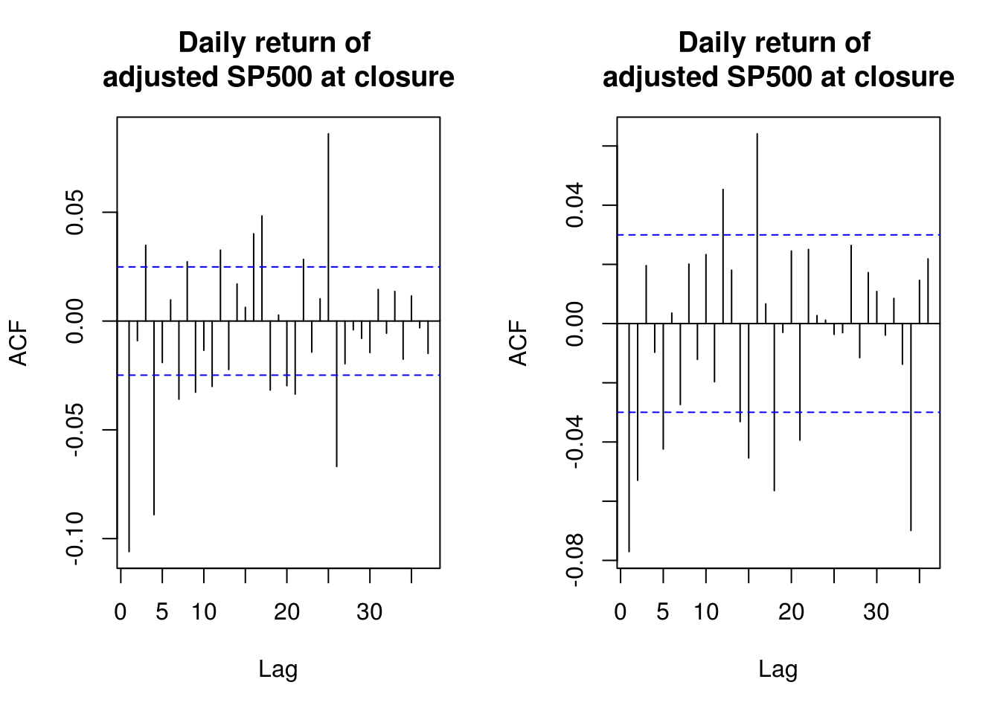
dev.off()null device
1 pacf(spret, na.action = na.pass, main = title_sp)
# (P)ACF of absolute value of daily returns
TSA::acf(abs(spret), na.action = na.pass, main = title_sp)
pacf(abs(spret), na.action = na.pass, main = title_sp)
# (P)ACF of squared daily returns
TSA::acf(I(spret^2), na.action = na.pass, main = title_sp)
pacf(I(spret^2), na.action = na.pass, main = title_sp)1.7.3 Solutions 3: Simulated data
The first 5 parts of the question are straightforward and left to the reader.
- Simulate 500 observations from an AR(1) process with parameter values \(\alpha \in \{0.1, 0.5, 0.9, 0.99\}\).
- Repeat for MA processes of different orders. There is no restriction on the coefficients of the latter for stationarity, unlike the AR process.
- Sample from an ARCH(1) process with Gaussian innovations and an ARCH(1) process with Student-\(t\) innovations with
df=4. Look at the correlogram of the absolute residuals and the squared residuals. - The dataset
EuStockMarketscontains the daily closing prices of major European stock indices. Type?EuStockMarketsfor more details andplot(EuStockMarkets)to plot the four series (DAX, SMI, CAC and FTSE). Useplot(ftse <- EuStockMarkets[,"FTSE"])to plot the FTSE series andplot(100*diff(log(ftse)))to plot its daily log return. Play with the ARCH simulation functions to generate some similar processes. - Simulate a white noise series with trend \(t\) and \(\cos(t)\), of the form \(X_t=M_t+S_t+Z_t\), where \(Z_t \sim \mathsf{N}(0,\sigma^2)\) for different values of \(\sigma^2\). Analyze the log-periodogram and the (partial) correlograms. What happens if you forget to remove the trend?
- Do the same for multiplicative model with lognormal margins, with structure \(X_t=M_tS_tZ_t\).
- For steps 5 and 6, plot the series and test the assumptions that they are white noise using the Ljung-Box test. Note you need to adjust the degrees of freedom when working with residuals from e.g. ARMA models.
n <- 100
tim <- scale(1:n)
x <- 5 * tim + cos(2 * pi * tim/n) + rnorm(n, sd = 3)
plot(x, type = "l", main = "Simulated series with seasonality and trend")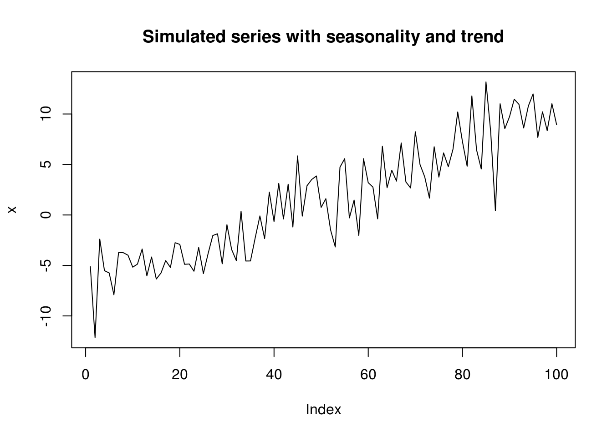
Box.test(x, type = "L")
Box-Ljung test
data: x
X-squared = 61.616, df = 1, p-value = 4.219e-15par(mfrow = c(1, 3)) # plots side by side
TSA::acf(x, main = "Simulated series")
pacf(x, main = "Simulated series")
spectrum(x, main = "Simulated series")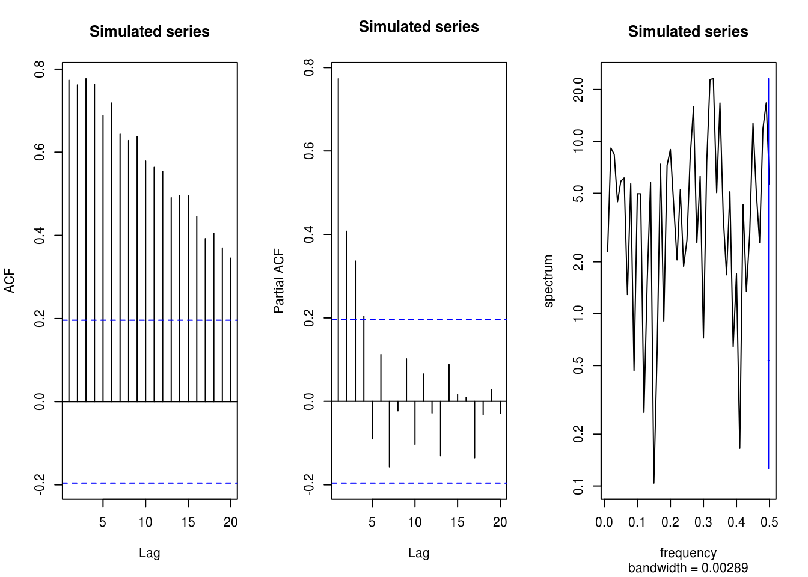
# Nothing in spectrum, persistence in the (p)acf
x <- 5 * tim + cos(2 * pi * tim/n) + rnorm(n, sd = 0.5)
TSA::acf(x, main = "Simulated series")
pacf(x, main = "Simulated series")
spectrum(x, main = "Simulated series")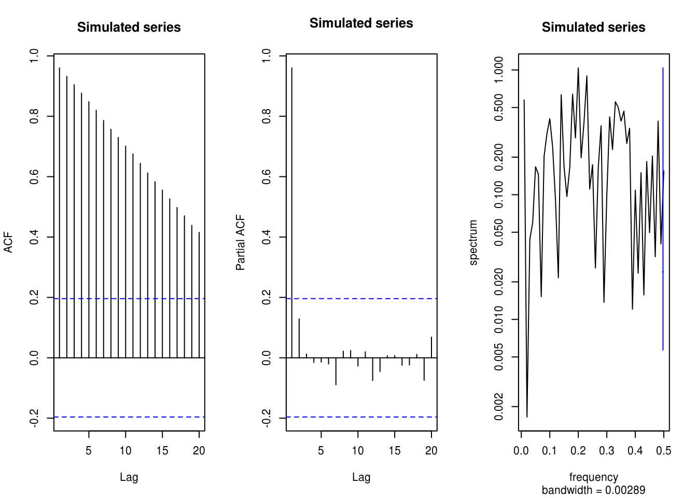
# Worst if the signal is strong relative to noise
y <- residuals(lm(x ~ 1 + tim))
TSA::acf(y, main = "Detrended series")
pacf(x, main = "Detrended series")
spectrum(y, main = "Detrended series")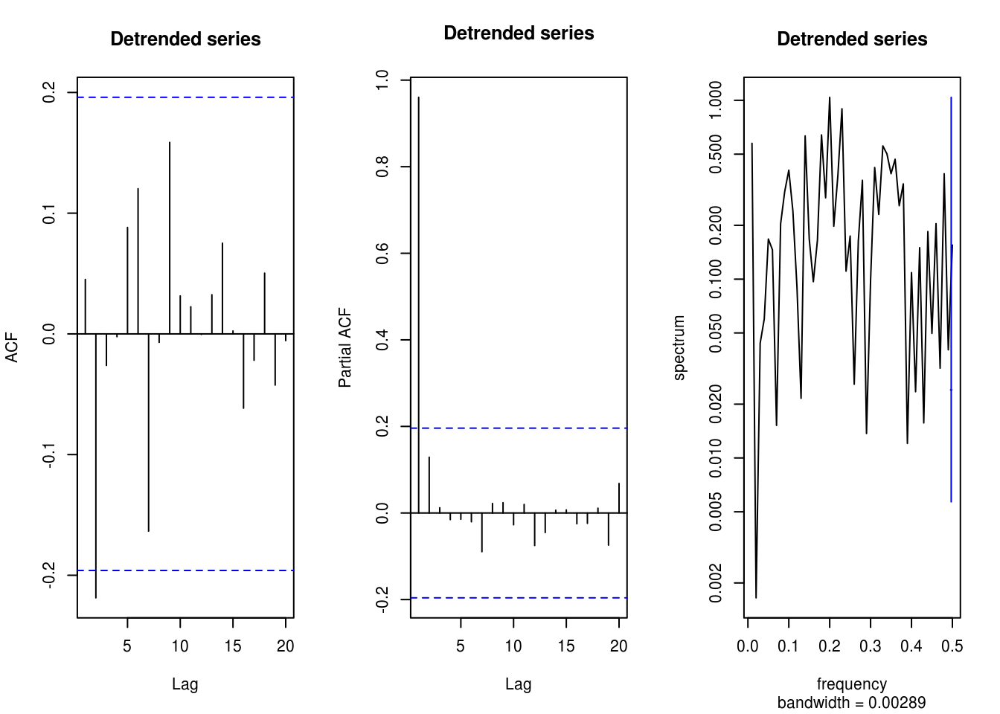
# The cosine still induces some lag-one dependence in pacf
plot(1:10, sapply(1:10, function(i) {
Box.test(y, lag = i, type = "Ljung", fitdf = min(i - 1, 2))$p.value
}), ylab = "P-value", xlab = "lag")
# These low p-values at large lags are due to the cosine term
mult <- exp(scale(x))
TSA::acf(mult, main = "Multiplicative series")
pacf(mult, main = "Multiplicative series")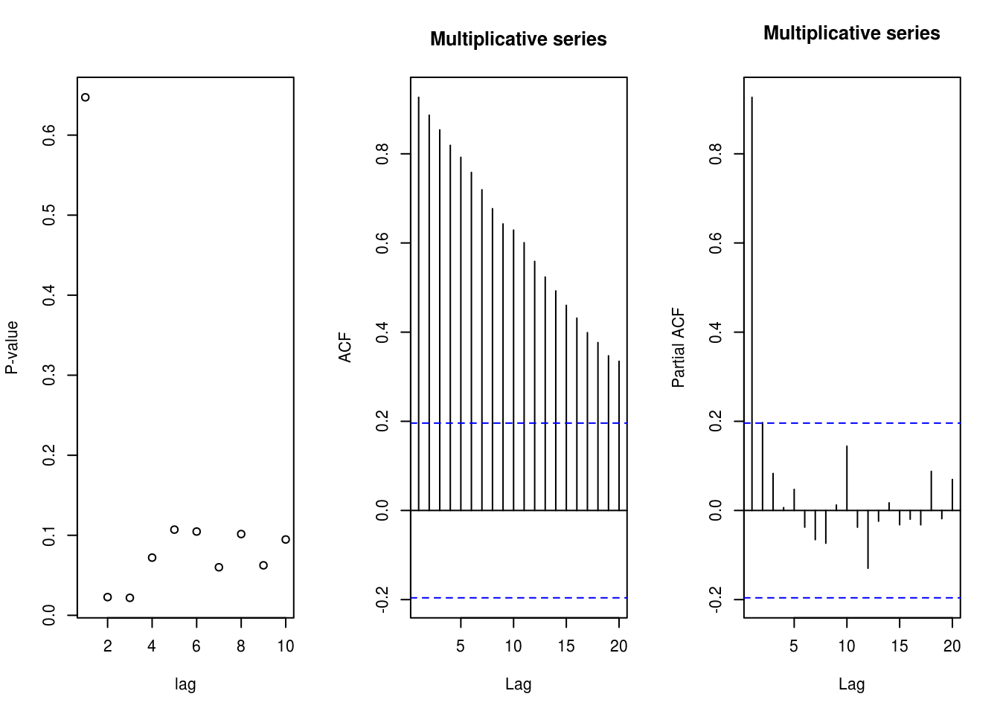
spectrum(mult, main = "Multiplicative series")
Box.test(mult, type = "L")
Box-Ljung test
data: mult
X-squared = 88.489, df = 1, p-value < 2.2e-16graphics.off()
# Now large impact on spectrum, and nonlinear features!
plot(mult, main = "Multiplicative series with lognormal margins", ylab = "",
xlab = "Time")
# Note that decompose has an option type='multiplicative' for seasonal
# components1.7.4 Solutions 4: Mauna Loa Atmospheric CO2 Concentration
- Load and plot the CO2 dataset from NOAA. Pay special attention to the format, missing values, the handling of string and the description. Use
?read.tablefor help, and look carefully at argumentsfile,sep,na.strings,skipandstringsAsFactors. From now on, we will work with the complete series (termed interpolated in the description). - Try removing the trend using a linear model. Plot the residuals against month of the year.
- Remove the trend and the periodicity with a Fourier basis (with period 12). Be sure to include both
sinandcosterms together. Recall that the standard Wald tests for the coefficients is not valid in the presence of autocorrelation! You could also usepolyorsplines::bsto fit polynomials or splines to your series. - Plot the lagged residuals. Are there evidence of correlation?
- Use the function
filterto smooth the series using a 12 period moving average. - Inspect the spectrum of the raw series and of the smoothed version.
- Inspect the spectrum of the detrended raw series.
- Test for stationarity of the deseasonalized and detrended residuals using the KPSS test viz.
tseries::kpss.test. - Use the
decomposeand thestlfunctions to obtain residuals. - Plot the (partial) correlogram for both decomposition and compare them with the output of the linear model.
# Because of comment.char=#, all the first lines are skipped But we lose the
# header
co2 <- read.table(file = "ftp://aftp.cmdl.noaa.gov/products/trends/co2/co2_mm_mlo.txt",
na.strings = "-99.99", stringsAsFactors = FALSE, col.names = c("year", "month",
"time", "average", "interpolated", "trend", "monthly_mean"))
# install.packages('stlplus') #this package offers a version of stl that
# deals with NAs
ycap <- expression(paste("Monthly mean ", CO[2], " mole fraction (ppm)"))
mcap <- "Average monthly mean CO2 concentration\n determined from daily averages"
lin_mod <- lm(data = co2, interpolated ~ time)
with(co2, plot(interpolated ~ time, type = "l", xlab = "Time", bty = "l", ylab = ycap,
main = mcap))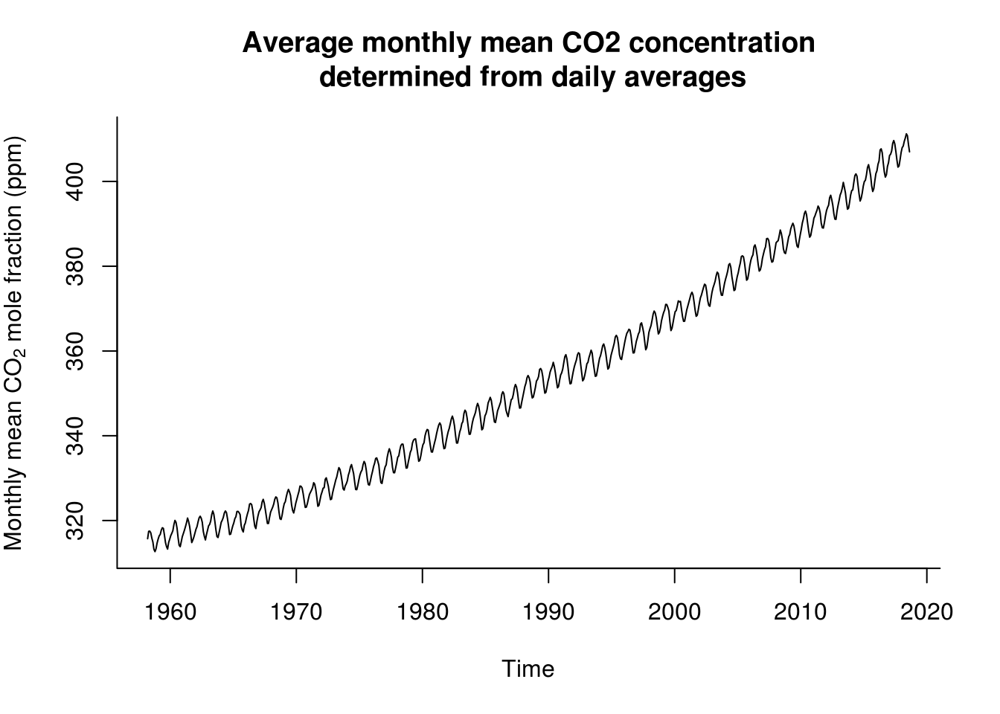
plot(co2$time, residuals(lin_mod), ylab = "Residual from `lm` (linear trend)",
xlab = "Time", main = mcap)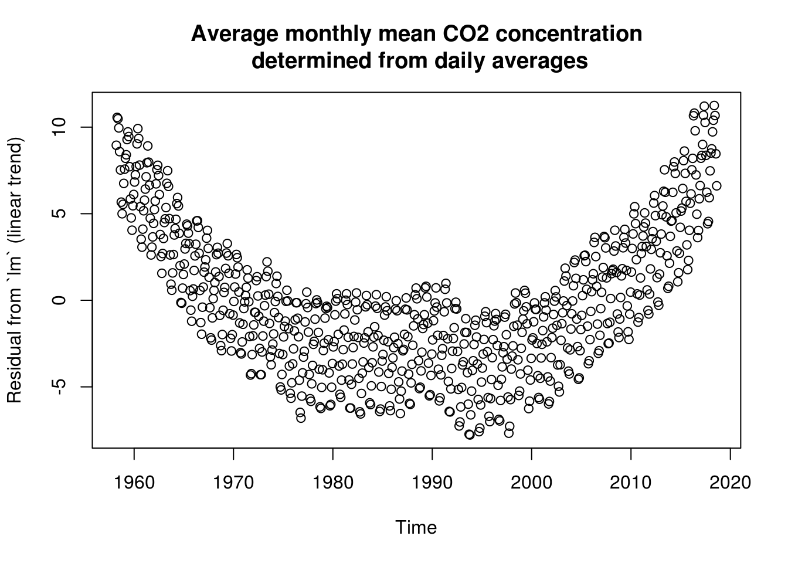
lin_mod <- update(lin_mod, . ~ . + I(time^2))
# same as lm(data=co2, interpolated ~ poly(time, degree = 2))
plot(co2$time, residuals(lin_mod), main = mcap, ylab = "Residual from `lm` (quadratic trend)",
xlab = "Time")
# Cast the full time series into a ts object
co2_ts <- with(co2, ts(data = interpolated, start = c(year[1], month[1]), end = c(tail(year,
1), tail(month, 1)), frequency = 12))
with(co2, plot(jitter(month, 1/3), residuals(lin_mod), ylab = "Residuals", xlab = "Month of year",
main = mcap))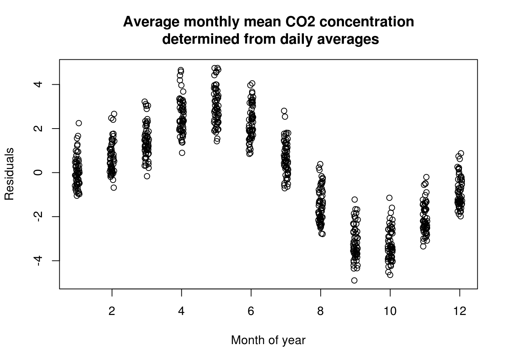
# Could create the basis manually
f_bs <- with(co2, fda::fourier(month, nbasis = 4, period = 12))[, -1]
lin_mod <- with(co2, lm(interpolated ~ splines::bs(time, df = 5, degree = 3) +
f_bs))
# summary(lin_mod) Is there structure left in the residuals?
plot(co2$time, residuals(lin_mod), ylab = "Residuals from final `lm` model",
xlab = "Time", main = mcap)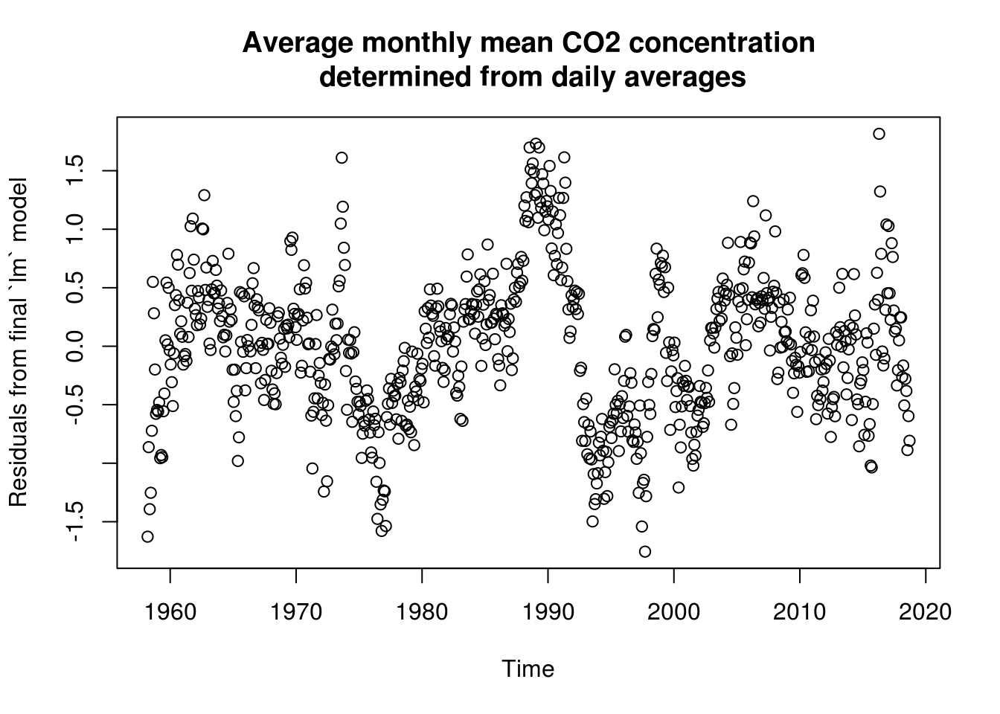
plot(co2$time, fitted(lin_mod), type = "l", ylab = ycap, main = mcap, bty = "l")
with(co2, lines(time, interpolated, col = 2))
legend(x = "topleft", legend = c("fitted", "data"), col = c(1, 2), lty = c(1,
1), bty = "n")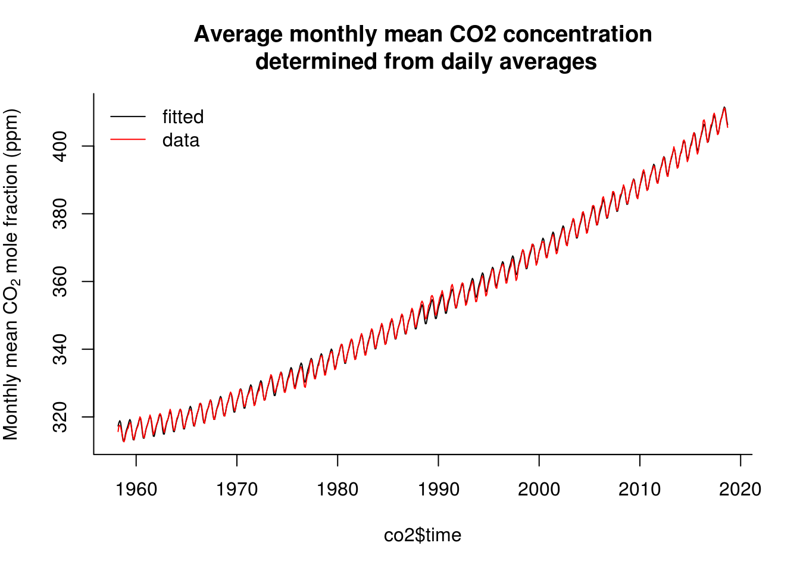
# Trend not quite adequate because more exponential growth. The trend does
# poorly in low-high observations Some discrepancy between the frequencies
# and the fitted Creates residual harmonic patterns - because trend minus
# fitted
res <- residuals(lin_mod)
pairs.ts <- function(d, lag.max = 10) {
old_par <- par(no.readonly = TRUE)
n <- length(d)
X <- matrix(NA, n - lag.max, lag.max)
col.names <- paste("Time+", 1:lag.max)
for (i in 1:lag.max) X[, i] <- d[i - 1 + 1:(n - lag.max)]
par(mfrow = c(3, 3), pty = "s", mar = c(3, 4, 0.5, 0.5))
lims <- range(X)
for (i in 2:lag.max) plot(X[, 1], X[, i], panel.first = {
abline(0, 1, col = "grey")
}, xlab = "Time", ylab = col.names[i - 1], xlim = lims, ylim = lims, pch = 20,
col = rgb(0, 0, 0, 0.25))
par(old_par)
}
pairs.ts(res)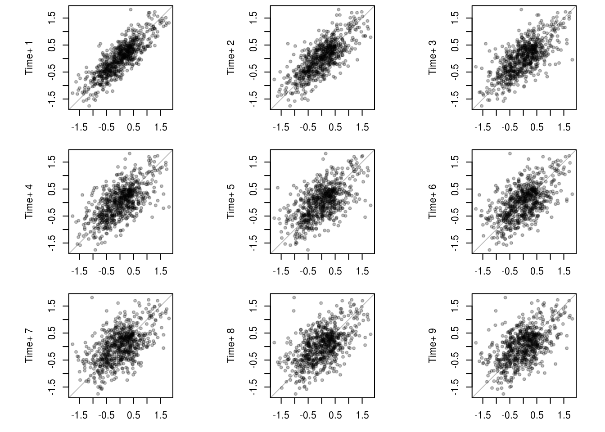
par(mfrow = c(1, 2))
TSA::acf(res, main = "Residuals")
pacf(res, main = "Residuals")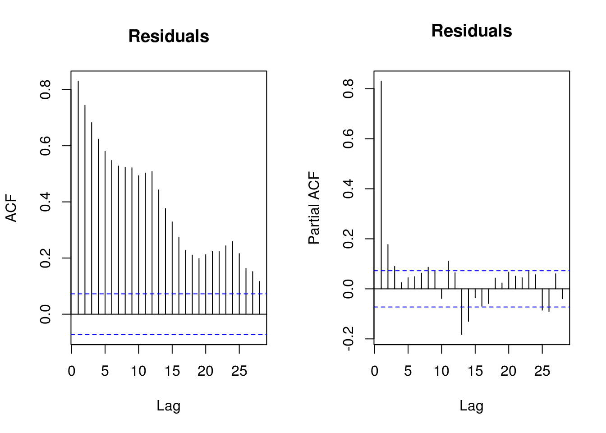
par(mfrow = c(1, 1))
# KS test: are residuals white noise?
cpgram(res, main = "Cumulative periodogram")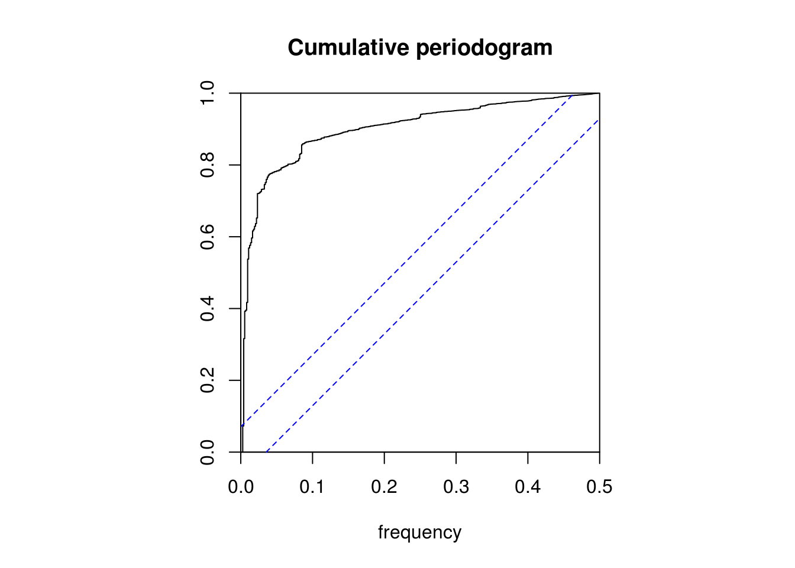
# No, as one would expect
## Spectrum of raw series
spectrum(co2$interpolated)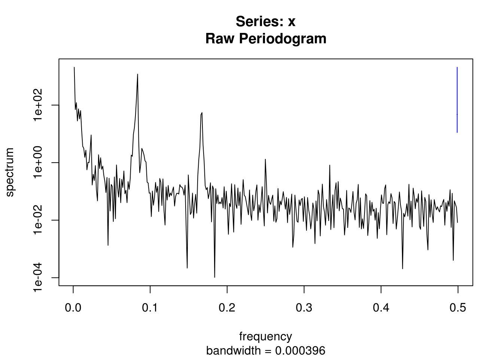
# default with vector is to have frequency on [0,0.5]
spectrum(co2_ts) #otherwise corresponds to frequency of `ts`, here yearly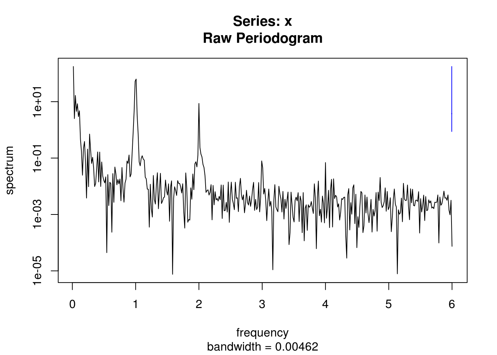
filtered <- filter(co2$interpolated, method = "convolution", filter = rep(1/12,
12))
spectrum(na.contiguous(filtered))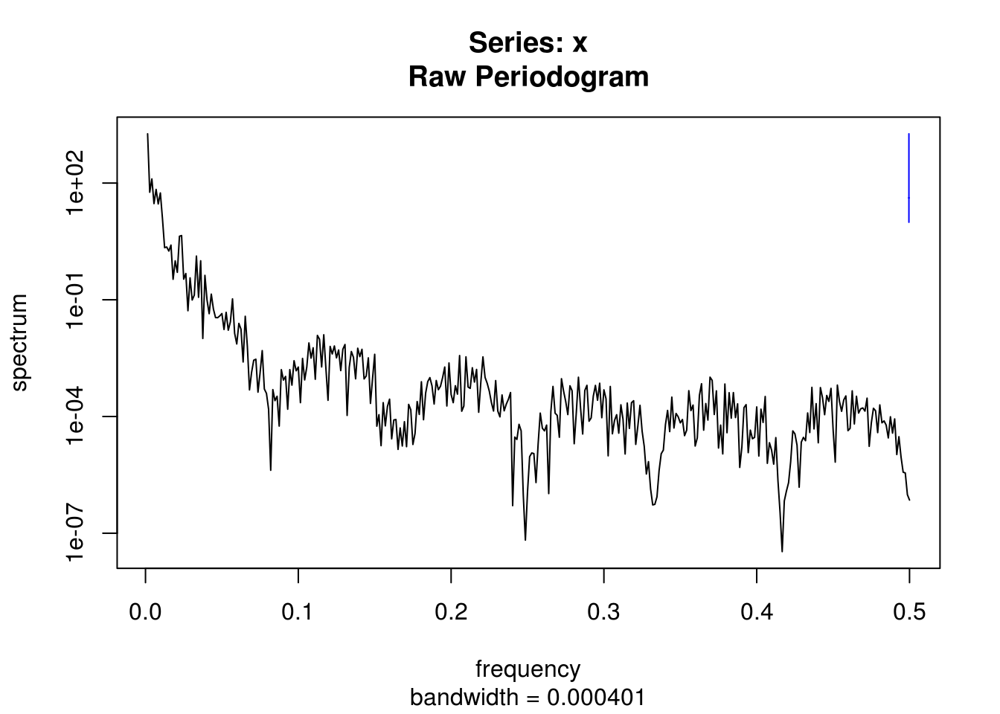
# Detrended smoothed series
spectrum(resid(lm(filtered ~ poly(co2$time, 2))))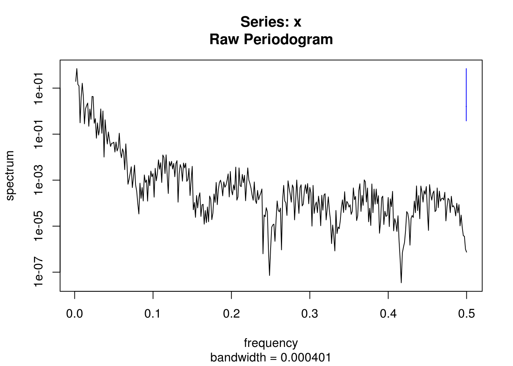
# Test for H0
`?`(tseries::kpss.test)
tseries::kpss.test(res, null = "Level")
KPSS Test for Level Stationarity
data: res
KPSS Level = 0.17017, Truncation lag parameter = 6, p-value = 0.1# Fail to reject null that it is level stationary
tseries::kpss.test(res, null = "Trend")
KPSS Test for Trend Stationarity
data: res
KPSS Trend = 0.17017, Truncation lag parameter = 6, p-value =
0.02986# Reject null at 5% that it is trend stationary
res_dec <- decompose(co2_ts)$random
res_stl <- stl(co2_ts, s.window = "periodic")$time.series[, "remainder"]
par(mfrow = c(1, 2))
# Some structure left due to incorrect model specification Residual
# frequency at lag 12-24 and two lag residuals
TSA::acf(res, na.action = na.pass, main = "Residuals from\n `lm`")
pacf(res, na.action = na.pass, main = "Residuals from\n `lm`")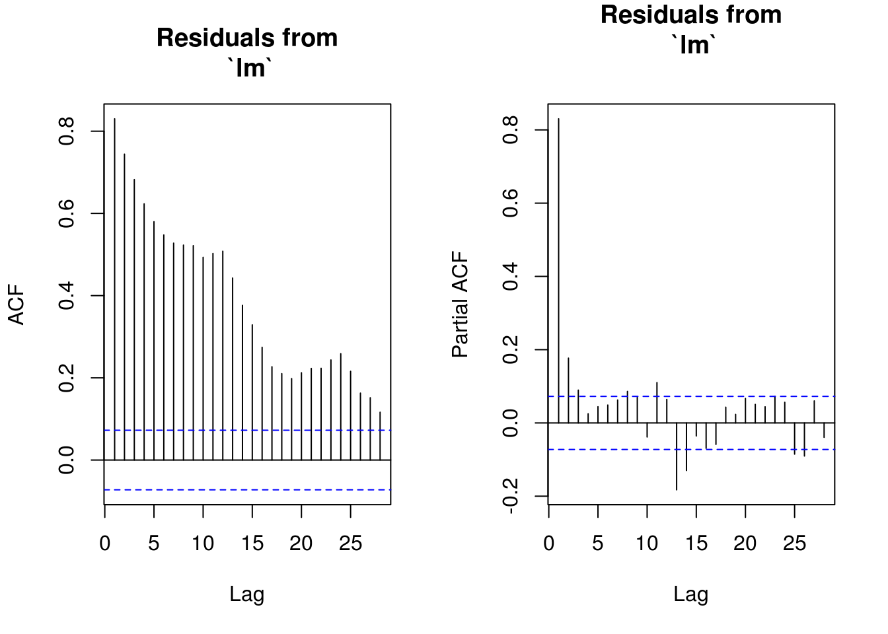
# Residuals show some remaining periodicity at year 1. Would need AR(1)
# model
TSA::acf(res_dec, na.action = na.pass, main = "Residuals from\n `decompose`")
pacf(res_dec, na.action = na.pass, main = "Residuals from\n `decompose`")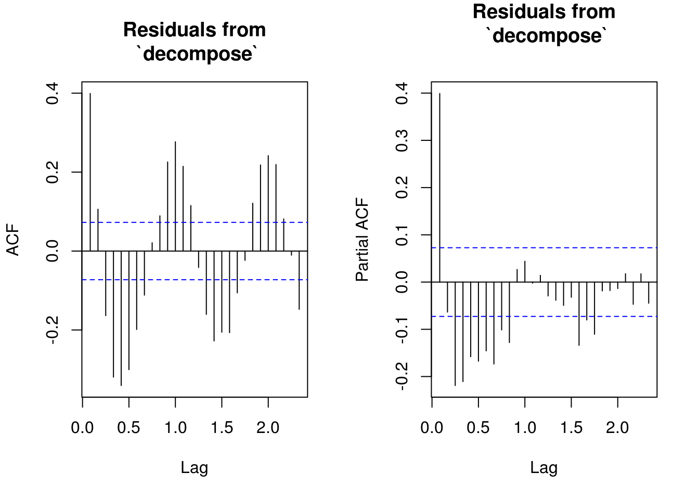
# Similar output
TSA::acf(res_stl, main = "Residuals from\n `stl`")
pacf(res_stl, main = "Residuals from\n `stl`")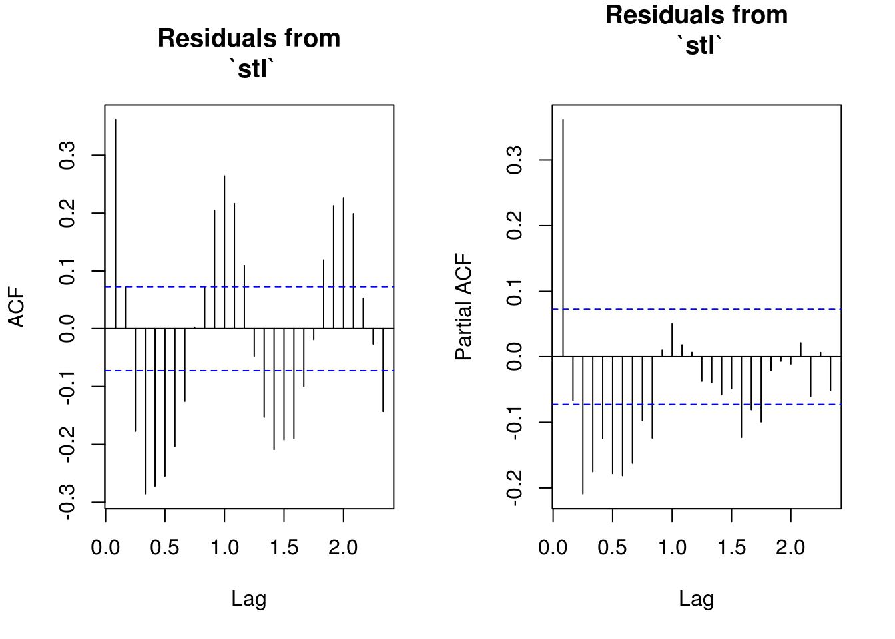